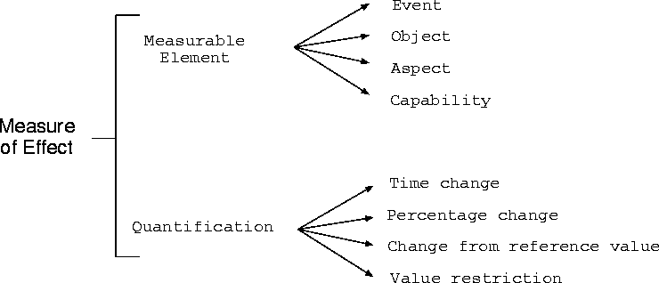

In this section, we present the proposed representation for measures of effect. First, we distinguish some types of MOEs, and then we present a grammar for their representation in Backus-Naur Form (BNF).
In the specification of a measure of effect, two basic elements can be
distinguished: a measurable element and its
quantification:
The interesting aspect of the measurable elements is (as the name indicates) that they should be measurable. This produces the interesting effect that the actions that are used as measurable elements must be countable, and in fact used as events.
It happens frequently that the measurable element is forgotten, generating MOEs like ``Degrade by 50%''. In these cases, the idea is that the measurable element is implicit in the objective. For example, for an objective like ``Disrupt petroleum production capability'', what this MOE means is ``Degrade petroleum production capability by 50%''. In the new representation, this reference cannot be left implicit. However, an editor for MOEs can offer the same object used in the objective as the element to be measured in the MOE, thereby facilitating edition.
The specification in this section is made only for the main type of MOEs defined above; the ``force'' examples are to be dealt with later.
Figure 1 shows a specification of the representation as a
grammar in BNF (Backus-Naur Form). Terms in all capitals are reserved
terms (keywords). Lowercase terms are non-terminal. Terms with first
letter in capitals represent names or strings, that is, they are
currently ``free text'' fields. Options are indicated as A | B, meaning either A or
B (but not both). Parentheses specify scope. Elements within
brackets are optional. A+ indicates one or more occurrences of
A, A* indicates zero or more occurrences of A.
Options are indicated as A | B, meaning either A or
B (but not both). Parentheses specify scope. Elements within
brackets are optional. A+ indicates one or more occurrences of
A, A* indicates zero or more occurrences of A.
Figure 1: BNF grammar of the proposed representation for measures of merit.
In order to help the visualization and understanding of this grammar (and considering that not everybody is well-acquainted with a BNF form), Figure 2 shows the main elements of the structured representation of measures of effect as a part-of decomposition.

Figure 2: Main structure of the proposed representation for
measures of effect. Arrows indicate types of fillers for one
element of the grammar.
The following are examples of how some measures of effect can be represented in the proposed grammar. Some of them are paraphrased from the set of examples. The measurable element and the quantification are separated for clarity.
Libyan aircraft deliver weapons against allied forces Zero (none)
Loss of Allied Shipping to Libyan Surface Vessels Zero (none)
NCA Communications links by Degrade by 50%
Transmission capability Degrade by 70%
Loss of Life to Enemy TBM, Air attack, or Sea Attack Zero (none)
Transmissions to military leaders Degrade by 70%
Communication effectiveness Reduced by 50%
WMD Facilities and/or Storage Reduced by 70%
Delivery Systems Reduced by 65%
Production Reduced to 20% of pre-conflict levels
Ability for troop movement on primary LOCs Reduced by 35%
Troop Strength Reduced by 20%
Loss of Campaign picture due to Enemy SOF activity Zero (none)
Information transfer capability Reduced by 60%
Decision process of leadership Delay by 24 hours
Losses of friendly air forces to SAMS/AAA/Aircraft over the battlespace Zero (none)
Losses of friendly air forces to SAMS/AAA/Aircraft over the Enemy Zero (none)
Losses of High Value Airborne Assets Zero (none)
Engagement of Allied forces by enemy naval vessels Zero (none)
Reduction of Friendly shipping due to Enemy naval vessels Zero (none)
Losses of Allied aircraft to pre positioned SAMS/AAA Zero (none)
Comm effectiveness Reduced by 75%
Transmissions to military leaders Degrade by 70%
Loss of life to Enemy TBM Zero (none)
TBM capability Reduced by 50%
Loss of life from Air Attack Zero (none)
Enemy Air Capability Reduced by 70%
Loss of life from Sea Attack Zero (none)
Loss of Shipping Assets to Enemy attack Zero (none)
Comm effectiveness Reduced by 75%
Transmissions to military leaders Degrade by 70%
WMD facilities and/or storage Reduced by 70%
Delivery systems Reduced by 65%
Ability for troop movement on primary LOCs Limited by 35%
Troop strength Reduced by 50%
Production in Western sector Reduced to 20% of pre-conflict levels
Distribution of petroleum in western sector Reduced by 80%
Distribution of petroleum in eastern sector Reduced by 70%
Loss of Campaign due to Enemy SOF activity Zero (none)
Information transfer capability Reduced by 60%
Decision process of leadership Delay by 24 hours
Attrition of friendly forces in contact Reduced by 70%
Loss of Allied Aircraft to Libyan surface or air forces Zero (none)